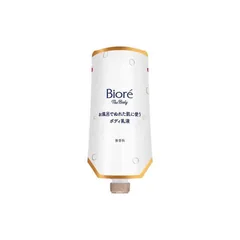
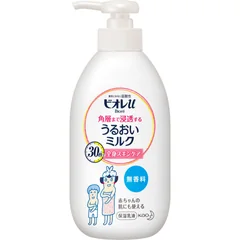
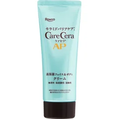

浴室の中で

花王
ビオレ ザ ボディ ぬれた肌に使うボディ乳液 無香料 つりさげ 285ml
285ml
¥603税込・出典掲載価格
選び方と声
- 選ぶ条件：拭いたあとの塗り忘れが多い人。ぬれた肌に塗って、タオルで押さえて拭く。湯船を出て最後に使う。
- 口コミには、浴室を出る前の習慣にしたら忘れなくなった、という声があった
気になる声気になる点：足の裏には使わない注意書き。冬は軽くて物足りないという声も
販売価格・容量・送料はリンク先でご確認ください
THE COSME EDIT / 2026.11.28
動画と同じ写真・名前・順番で並べています。見出しは順位ではなく、使う場面です。浴室の中で塗るか、拭いた直後に塗るかはどちらか片方でよく、それでも白い場所にだけ追い塗りする形です。3つ全部ではなく、自分の場面の1本で足ります。商品の表示はAmazonの商品ページ、悩みはガールズちゃんねるの相談で挙がっていた声に基づいています。
03 ITEMS 動画で紹介した商品
動画では商品のほかに、塗る時間、体の洗い方、お湯の温度など、買わずにできることも扱っています。3つとも、傷・はれもの・湿疹などの異常がある所には使えません。肌に合わないときは使用をやめてください。かゆみで眠れない・掻いて血が出る・湿疹が広がるときは皮膚科へ。
価格は出典掲載時のものです。楽天の現在価格とは異なる場合があります。

花王
285ml
¥603税込・出典掲載価格
選び方と声
気になる声気になる点：足の裏には使わない注意書き。冬は軽くて物足りないという声も
販売価格・容量・送料はリンク先でご確認ください

花王
300ml
¥517税込・出典掲載価格
選び方と声
気になる声気になる点：冬には軽いという声も。ポンプ部分に水がかかる状態では使わない
販売価格・容量・送料はリンク先でご確認ください

ロート製薬
70g
¥1312税込・出典掲載価格
選び方と声
気になる声気になる点：こっくり重め、伸びが悪いという声。ラノリンが合わない人は成分表を確認
販売価格・容量・送料はリンク先でご確認ください
SOURCE & NOTES
集計期間：2026年11月28日に確認
価格は2026年11月28日にAmazon商品ページで確認した税込価格です（掲載時点）。3つとも販売元はAmazon.co.jpです。楽天のリンクは同じ商品のページですが、店舗によって価格が違う場合があるので、容量をご確認ください。購入前にリンク先でご確認ください。